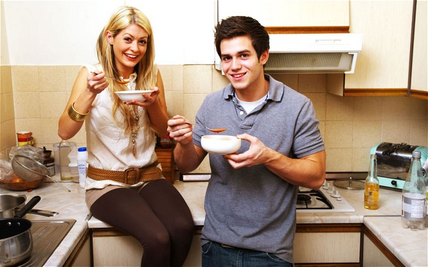
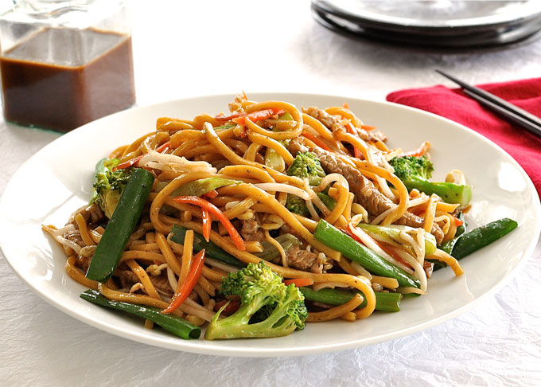
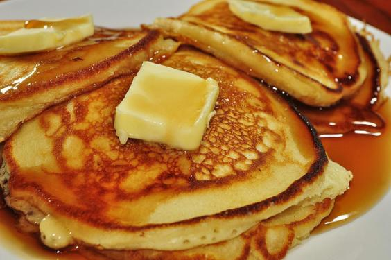
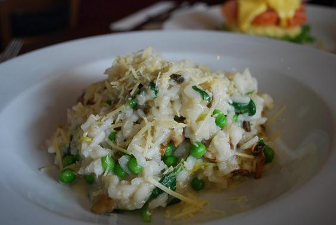

10 Nutritious Dinner Recipes That Don't Break the Bank

College can be busy. As students unpack, make friends, party, and try out every university society, they can often trade a healthy home-cooked meal in favour of an expensive take-away pizza.
Eating takeaways and microwave meals means students who are probably sleep-deprived, among other things, are missing-out on important nutrients. More importantly, they’re losing-out on pennies.
Trust me: Pot Noodles and takeaways are not your friend. They don’t have the right nutrients in to fill you up through the high-energy events of Freshers’ and they really don’t work out that cheap.
Never fear, though, if you’re a student about to embark on the journey away from Mum’s Sunday roast and towards beans on toast, here’s a list of cheap and easy meals that anyone can throw together:
1. Spaghetti bolognese
A staple of the student diet, this is nutritious and delicious, and is great to share; making this in your new accommodation can be a great way to bond with your new friends, or if you don’t fancy sharing it can be easily frozen. It’s cheap too and, if careful, can be made at a cost of around €1-per-person. Vegetarian? Simply substitute the beef for Quorn. See a full recipe here.
2. Strawberry and almond tarts
This might seem like the super-posh food that your aunty serves at her dinner parties, but at only 74c-per-serving, this easy recipe is a guaranteed way to impress your new flatmates.3. Stir-fry
A cheap, quick, and nutritious meal which can be made in minutes. It’s also really easy to make for one or many. See a full recipe for a chicken stir-fry here (for a veggie option, just exclude the chicken and add extra veg. It’s just as tasty).
4. Pasta bakes
These are great. You can bake them on a Sunday and eat all week. Alternatively, they’re great for a cooking in big groups. They’re versatile too and can be used with (or without) varieties of meat, fish, and veg. See a full recipe here.
5. Thai mango chicken
This may seem like a fancy meal for ladies that lunch with a side of quinoa, but it’s very affordable and easy to make. At only €2.37-per-serving, it’s low-fat and refreshing, and great for helping that hangover after a heavy night out. See the full recipe here.
6. Granola
With breakfast being the most important meal of the day, granola or porridge are cheap and stress-free to prepare and full of slow-release energy which is perfect for busy days of trying out societies and buying posters. See a full recipe here.
7. Pancakes
Great for sharing and fun to cook with friends. Extremely cheap and simple to make too. See a full recipe here.
8. Pizza omelette
Any kind of omelette is great, cheap and, easy to make for breakfast, lunch, and dinner – or even as a snack. A pizza omelette is more fun to make and a lot less expensive than going to a takeaway. Of course, all the ingredients can be easily substituted to suit differing taste buds. See the full recipe here.
9. Olive bread swirls
Great fun to make as a light lunch, breakfast or snack, and at only €1.83-per-serving, this is a cheap Freshers’ Week treat that looks super-posh.
10. Risotto
Fantastic dinner to make as a group, or to freeze and eat for a week. This is a great chicken and pea recipe, but can easily be switched to a vegetarian or pea-free option for ‘greenophobes’.